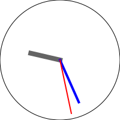

Simple Analog Clock in Perl
Long ago I wrote a really clunky analog clock app. Yesterday I finally fixed it up...
This post is not about some earth shattering revelation. Rather it's about the basic math needed to render a working clock.
tl;dr: basic-clock at github
First up is the standard preamble for perl programs:
#!/usr/bin/env perl
use strict;
use warnings;
Next are the imports:
use GD::SVG ();
use Math::Trig qw(:pi);
We will need a few constant values of π:
use constant HALF => pip2;
use constant DOUBLE => pi2;
use constant FRACT => pi2 / 12 / 60;
And we will need a few variables that define the behavior of the app. Like these optional, user defined variables first:
my ( $diameter, $hours, $minutes, $seconds ) = @ARGV;
my $show_hours = 0;
$diameter ||= 200;
my $radius = $diameter / 2;
my $clock = GD::SVG::Image->new( $diameter, $diameter );
my $trans = $clock->colorAllocate( 200, 200, 200 ); # background
my $red = $clock->colorAllocate( 255, 0, 0 ); # second hand
my $blue = $clock->colorAllocate( 0, 0, 255 ); # minute hand
my $grey = $clock->colorAllocate( 100, 100, 100 ); # hour hand
my $black = $clock->colorAllocate( 0, 0, 0 ); # perimeter
Ok, with our variables set, the functionality begins!
Our clock background will be transparent:
$clock->transparent($trans);
Add a perimeter circle to the clock:
$clock->arc( $radius, $radius, $diameter, $diameter, 0, 360, $black );
Indicate the hours if $show_hours is true:
if ($show_hours) {
for my $hour (1 .. 12) {
my ( undef, undef, $h ) = time_point( $radius, 0, 0, $hour );
$clock->arc( @$h, 6, 6, 0, 360, $black );
}
}
Now get HH:MM:SS coordinates of the given (or current) time for the hands:
my ( $s, $m, $h ) = time_point( $radius, $seconds, $minutes, $hours, 1 );
Notice that we pass a 1 to the time_point() function this time. That is a "flag" that means, that the hands of the clock are to be plotted (and not the hour markings).
Draw the hands of the clock with varying thickness and color:
$clock->setThickness(8);
$clock->line( $radius, $radius, @$h, $grey ); # hour hand
$clock->setThickness(4);
$clock->line( $radius, $radius, @$m, $blue ); # minute hand
$clock->setThickness(2);
$clock->line( $radius, $radius, @$s, $red ); # second hand
Now render the clock!
print $clock->svg;
That's it! There is just this one sub-routine that handles all the math:
sub time_point {
my ( $radius, $s, $m, $h, $flag ) = @_;
Getting a flag set to true means we are plotting the hands of the clock. Without, we are just rendering the perimeter hour markings.
Here is where we get the current time if one is not given:
( $s, $m, $h ) = ( localtime )[ 0 .. 2 ]
unless defined $s && defined $m && defined $h;
warn sprintf "%02d:%02d:%02d\n", $h, $m, $s;
We need to remember the number of minutes so we can compute the position of the hour hand:
my $min = $m;
Now compute the analog time equivalents with our constants:
$s = $s / 60 * DOUBLE - HALF;
$m = $m / 60 * DOUBLE - HALF;
$h = $h / 12 * DOUBLE - HALF;
To compute the position of the hour hand, we also need to add 1/2 degree for each minute:
$h += $min * FRACT if $flag;
In order to handle the parts of the time separately in the loop below, save the triple in a hash of named keys:
my %t = ( s => $s, m => $m, h => $h );
Now loop over the named keys:
for my $i (qw( s m h )) {
my $r = $radius;
And if we are plotting the hand positions, use differring lengths for each:
if ($flag) {
$r = $i eq 'h' ? $radius / 2
: $i eq 'm' ? $radius / 1.3
: $i eq 's' ? $radius / 1.1
: $radius;
}
That makes the hands look a bit more realistic for actual clocks.
Finally replace the time values with rectangular coordinates:
$t{$i} = [
$radius + $r * cos $t{$i},
$radius + $r * sin $t{$i}
];
}
Show what we have computed:
warn join(', ', map { sprintf "[%.2f,%.2f]", @$_ } @t{qw(s m h)}), "\n";
And return the new coordinates:
return @t{qw(s m h)};
}

Voila!